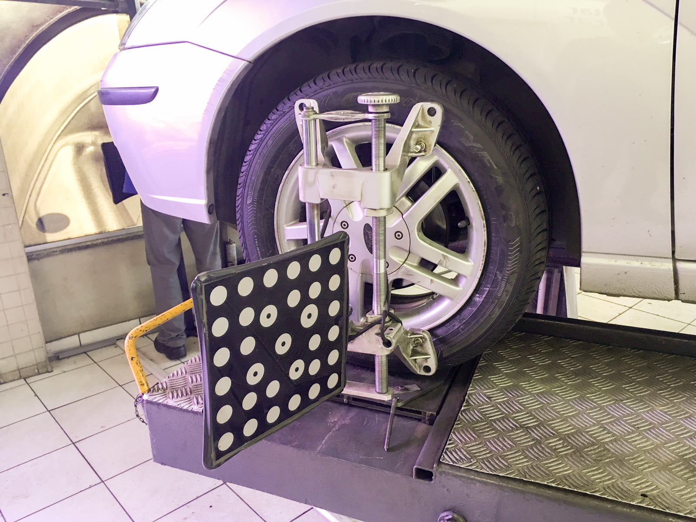

Specialty
Computerized suspension, steering & alignment
Starting with a comprehensive evaluation of your vehicle’s structural suspension and steering systems, we utilize the latest computerized equipment to provide specialized suspension alignment service. The procedure is tailored to your individual needs — daily commuting, performance street, track, or combined use.
- Complete suspension and steering system repairs
- High-quality suspension modification installs: lowering kits, coil-overs, lift kits, sway bars
- Corner balance diagnosis and correction